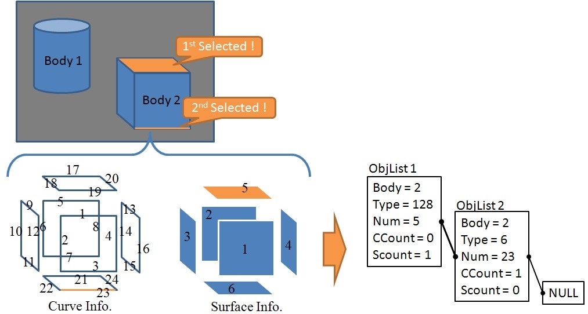

BODYListとOBJECTList
画面上で選択された曲線/曲面の幾何情報はBODYListとOBJECTListの2つに格納され、UserFuncとへ渡されます。
このセクションでは、これら2つのリストについて説明します。
BODYListとOBJECTListはBODY.h内で次のように定義されています。
typedef KODlistData BODYList; // 汎用データリストの型をBODYListとして再登録
typedef KODlistData OBJECTList; // 汎用データリストの型をOBJECTListとして再登録
}
更にKODlistDataはKodListFunc.h内で定義されており、リストを操作するいくつかの関数を持ったクラスです。
つまりBODYListとOBJECTListはKODlistDataクラスの別名であり、元々は同じものを指します。
// リストKODListadata用データの実体を格納するためのクラス
class Data
{
friend class KODlistData;
public:
Data(void *a) { data = a; next = NULL; before = NULL;} // コンストラクタ
Data() { data = NULL; next = NULL; before = NULL;} // コンストラクタ
void SetNextpData(Data *d) {next = d;} // 次のDataオブジェクトへのポインタをセットする
void SetBeforepData(Data *d) {before = d;} // 前のDataオブジェクトへのポインタをセットする
Data *GetNextpData() {return next;} // 次のDataオブジェクトへのポインタを得る
Data *GetBeforepData() {return before;} // 前のDataオブジェクトへのポインタを得る
void *GetData() {return data;} // データの実体を得る
protected:
void *data; // データの実体はこのアドレスに格納される
Data *next; // リストの前方を指すポインタ
Data *before; // リストの後方を指すポインタ
};
次に、このKODlistDataクラスに格納されるデータの実体を見てみると、Data型として宣言されており、更にこのData型は
自己参照クラスとして定義されています。このDataクラス内で宣言されている変数void *dataに、セレクションされたデータの実体(幾何情報やセレクション情報)
が格納されます。void *型として定義しているため、実際に格納するデータはどんなものでも構わず、(void *)型にキャストして格納します。
つまり、KODlistDataクラスはリスト構造を構築するための箱という役割となっています。
これをふまえて、2.6 サンプルアプリケーションのソース解説 で示したExecSampleFunc1()関数をもう一度以下に示します。
// Userボタン登録関数1の実体を記述
// *BodyList:BODYの実体が登録順にリストされている
// *ObjList:セレクションされたエンティティ情報
// PickCount:セレクションされたエンティティの数
int USER::ExecSampleFunc1(BODYList *BodyList,OBJECTList *ObjList,int pickcount)
{
// User StatusのModeによって処理を分ける
if(UserStat.Mode == 0){
SmpRegistBody(BodyList,ObjList); // IGESファイルを読み込み，Bodyとして登録する
return KOD_TRUE;
}
else if(UserStat.Mode == 1){
SmpTransBody(BodyList,ObjList,pickcount,UserStat.Prop); // 指定したBodyに対しアフィン変換を行う
return KOD_TRUE;
}
else if(UserStat.Mode == 2){
SmpDivCurves(BodyList,ObjList,pickcount,UserStat.Prop); // 曲線を指定した分割数で分割した点を生成する
return KOD_TRUE;
}
else if(UserStat.Mode == 3){
SmpNearestPt(BodyList,ObjList,pickcount,UserStat.Prop); // 任意の点からの曲面上の最近傍点を求める
return KOD_TRUE;
}
else if(UserStat.Mode == 4){
SmpUVDivLine(BodyList,ObjList,pickcount,UserStat.Prop); // 曲面のUVパラメータで等間隔に分割した点を生成する
return KOD_TRUE;
}
else{
// void
return KOD_FALSE;
}
}
5行目を見てください。BodyListはBODYListへのポインタであり、BODYの実体が登録順にリストされています。ObjectListはOBJECTListへのポインタであり、
指定されたエンティティの情報を読み込んでいます。また、pickcountはint型の変数であり、ピックされたエンティティの数を取り込んでいます。これら3つの変数によって，
ユーザーが欲しい曲線や曲面の情報を取得することが可能となります．例えば，17行目ではSmpDivCurves()の引数としてBodyList及びObjectListを指定しています．
そこで再度，SampleFunc1.cppのSample3を例にして説明を行います。
// Sample3: 曲線を指定した分割数で分割した点を生成する
int SmpDivCurves(BODYList *BodyList,OBJECTList *ObjList, int PickCount, double Prop[])
{
if(!PickCount) return KOD_ERR; // セレクションされていなかったら、何もしない
NURBS_Func nfunc; // NURBSを扱う関数集を呼び出す
Coord div_pt[102]; // 分割点の座標値を格納する
double green[3] = {0,1,0}; // 分割点表示の色(緑)
int divnum = (int)Prop[0]; // ユーザーステータスのprop1を分割数として読み込み
// セレクションした数だけループ
for(int i=0;i< PickCount;i++){
OBJECT *obj = (OBJECT *)ObjList->getData(i); // i番目にセレクションされたエンティティの情報を得る
BODY *body = (BODY *)BodyList->getData(obj->Body); // i番目にセレクションされたBODYの実体を得る
if(obj->Type == _NURBSC){ // i番目にセレクションされたエンティティがNURBS曲線なら
int ptnum = nfunc.CalcDeltaPtsOnNurbsC(&body->NurbsC[obj->Num],divnum,div_pt); // 分割点を求める
for(int j=0;j< ptnum;j++){
DrawPoint(div_pt[j],1,3,green); // 分割点を表示
}
}
}
return KOD_TRUE;
}
14行目及び15行目において、セレクションされたデータの実体をKODlistDataからそれぞれ取り出しています。
データの取り出しには、KODlistDataクラスで定義されているgetData()関数を使います。このとき、その関数の頭には(OBJECT *)や(BODY *)
が付いており、void *dataをOBJECT構造体やBODY構造体にキャストしていることが分かります。
BODY構造体については3.8 CADデータの内部表現 を参照してください。
では次に、OBJECT構造体を見てみます。OBJECT構造体はBODY.ｈに定義されています。
// ピックされたオブジェクトを示す構造体
typedef struct{
int Body; // BODYオブジェクトの番号
int Type; // エンティティタイプのシンボル(NURBS曲線:126 , NURBS曲面:128 , トリム面:144)
int Num; // Typeにおける要素番号(NURBS曲線が4本あったら、その4本に割り当てられた0〜3の番号)
int CCount; // 何番目にピックされた曲線かを表す
int SCount; // 何番目にピックされた曲面かを表す
}OBJECT;
OBJECT構造体には、セレクションされたエンティティがどのBODYに属しているか、面なのか線なのか、エンティティに割り振られたIDなど、
セレクションされたエンティティを特定するための情報が格納されています。よってSampleFunc1.cppの14行目の様に、例えば
OBJECT *obj = (OBJCET *)ObjList->getData(i);
とすれば、i番目にセレクションされたエンティティを特定するための情報がobjに格納さることになります。
この特定情報objを元に実際にBODYの実体を引っ張ってくるには、15行目、
BODY *body = (BODY *)BodyList->getData(obj->Body);
となります。getData()で引っ張ってくるデータのIDがobjの要素Bodyに格納されているわけです。
次に16行目を見てみると、obj->Typeの中身を見て条件分岐していることが分かります。セレクションされたエンティティがNURBS曲面(#128)なのかNURBS曲線(#126)なのかといった
形状情報がここに格納されます。エンティティに割り振られた番号はBODY.h内に定義されています。
// エンティティタイプのシンボルを定義
#define CIRCLE_ARC 100 // 円/円弧
#define COMPOSITE_CURVE 102 // 複合曲線
#define CONIC_ARC 104 // 円錐曲線
#define COPIOUS_DATA 106 // 有意点列
#define PLANE 108 // 平面
#define LINE 110 // 線分
#define PARAMETRIC_SPLINE_CURVE 112 // パラメトリックスプライン曲線
#define PARAMETRIC_SPLINE_SURFACE 114 // パラメトリックスプライン曲面
#define POINT 116 // 点
#define TRANSFORMATION_MATRIX 124 // 変換行列
#define NURBS_CURVE 126 // 有理Bスプライン曲線
#define NURBS_SURFACE 128 // 有理Bスプライン曲面
#define CURVE_ON_PARAMETRIC_SURFACE 142 // 面上線
#define TRIMMED_SURFACE 144 // トリム面
#define SUBFIGURE_DEFINITION 308 // 子図の定義
#define ASSOCIATIVITY_INSTANCE 402 // グループ
#define DRAWING 404 // 図面
#define PROPERTY 406 // 図面サイズ
#define SINGULAR_SUBFIGURE_INSTANCE 408 // 子図の参照
#define VIEW 410 // 投象面
ただし、Kodatunoでは全てがNURBS表現が基本ですので、obj->Typeには#126、#128、#144しか今のところ格納されません。
セレクションされたエンティティの幾何情報を実際に参照するには、68行目の
body->NurbsS[obj->Num]
のように、obj->NumがセレクションされたエンティティにおけるTypeごとのIDとなり、66行目で取得したBodyの実体から辿ることができます。
最後に、セレクションとOBJECT構造体との関係を模式的に表した図を示します。
